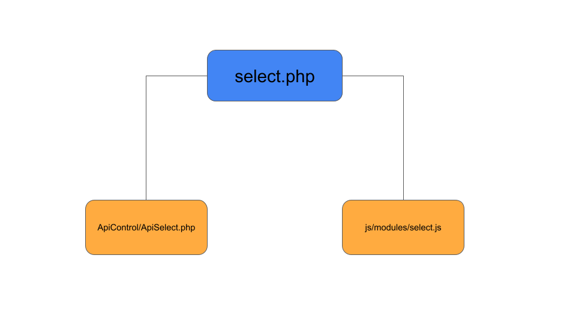
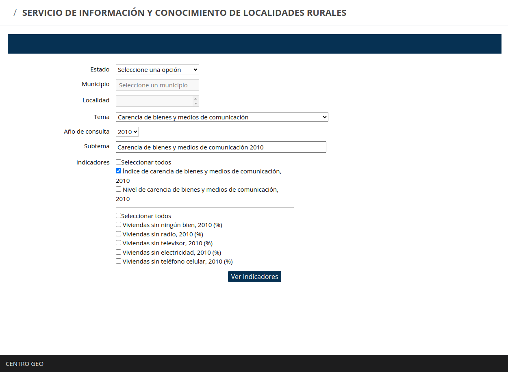

Documentación para el programdor
El servicio de información y conocimiento de localidades rurales (SICLR) es una aplicación que está hecha en PHP, que se usa para la vista y para el controlador. Existen también archivos JavaScript, los cuales sirven para dar interactividad a la aplicación a medida que el usuario está navegando dentro de ella. Finalmente, hay archivos CSS que le dan el estilo a la aplicación.
Enseguida se muestra la estructura de la aplicación y la descripción de cada uno de sus archivos y componentes.
- ApiControl/
- ApiControl.php
- ApiMain.php
- ApiMapa.php
- ApiSelect.php
- ApiServicioMap.php
- ApiSessionSecurity.php
- index.php
- Router.php
- assets/
- jquery-1.9.1.min.js
- nicepage.css
- nicepage.js
- Autoload/
- Autoload.php
- css-geo/
- font-awesome/
- plugins/
- Database/
- Database.php
- docs/
- programador/
- docs_programador.html
- usuario/
- docs_usuario.html
- programador/
- footable/*
- Item/
- Item/
- images/*
- Item
- Item
- img/
- invalido.png
- valido.png
- js-geo/
- modules
- inicio.js
- select.js
- servicioMap.js
- plugins/*
- modules
- mapa/*
- Item
- Item
- modules/*
- Item
- Item
- php-getting-started/*
- Item
- Item
- access-config.php
- block.php
- composer.json
- Database.php
- footer.php
- header.php
- index.php
- info.php
- LICENSE
- README.md
- select.php
- servicio-map.php
El SICLR cuenta con dos opciones o formas de acceso a la información y descarga de datos: opción 1, de búsqueda por localidad, y opción 2, de búsqueda por territorio o tipo de tenencia de la tierra.
En ambas opciones, el usuario accede a la información a través de un formulario en donde, en los primeros dos elementos, el usuario debe escoger el estado y municipio de interés. Después de eso, la aplicación muestra distintos modos de acceso a la información.
1. Búsqueda por localidades
El siguiente diagrama muestra los archivos relacionados para la opción 1 del SICLR.
El archivo select.php es el que se encarga de la vista de la opción 1 (Fig 2). En la vista se pueden ver los elementos del formualario como son: Estado, Municipio, Localidad, Tema, Año de consulta, Subtema e Indicadores. Una vez que el usuario realizó la selección de interés, dará click al botón Ver indicadores y posteriormente podrá dar click al botón Exportar.
1.1 Inicialización de la aplicación
Cuando la aplicación inicializa se ejecuta la función init. Esta función se encuentra en el archivo footer.php y en la función js-geo/modules/select.js
La función init, en el archivo foooter.php, usa la función bindTheme, que tiene interaccin con:
- btnThemes. Esta función se encarga de ponerle estilo a los botones cuando el usuario da click a cada uno de ellos.
- btnSalir. Esta función fue creada en el caso futuro de que exista una página de inicio donde el usuario pueda iniciar sesión (log in) en el servicio.
- themeSelect. Esta aún no sé qué hace.
La función init dentro del archivo js-geo/modules/select.js usa las funciones initAlterData() y bindFilters().
La función initAlterData() se usa para inicializar todas las variables que se usan en cada uno de los elementos del formulario y realiza la llamada a la BD con la función apiCall.
La función bindFilters() se usa para ir filtrando los valores de interés, a medida que el usuario está interactuando con el formulario. Esta función utiliza a su vez las funciones de: changeEstado(), changeAnio(), changeTema(), changeSubtema(), checkAllIndicadores() y checkAllIndicadoresVar() para estar realizando los cambios de valores (desde la base de datos) cuando el usuario realiza una selección o realiza un cambio de selección; también utiliza la función buscarRes(), que se encarga de realizar la búsqueda de los valores de interés cuando el usuario da click al botón Ver indicadores.
1.2 Casilla Estado
Cuando el usuario interactúa con la casilla de Estado, la función encargada de esta interacción es changeEstado. Esta función recibe, desde la base de datos, el ID del estado que se está seleccionando para hacer el cambio. Cuando la aplicación se inicializa en primera instancia o cuando está seleccionado Selecciona una opción, la casilla de Municipio está deshabilitada.
1.3 Casilla de Municipio
Cuando el usuario interactúa con la casilla de Municipio, la función encargada de esta interacción es selectMunicipio. Esta función es utilizada dentro de la función changeEstado y recibe como argumento de entrada el ID del estado seleccionado. De esta forma realiza el filtrado de los municipios del estado para mostrar en la lista desplegable.
Cuando la aplicación se inicializa en primera instancia o cuando está seleccionado Selecciona una opción, la casilla de Municipio está deshabilitada.
1.4 Casilla de Localidad
Cuando el usuario interactúa con la casilla de Localidad, la función encargada de esta interacción es selectLocalidad. Esta función es utilizada dentro de la función selectMunicipio. Recibe como argumento de entrada el ID del municipio seleccionado por el usuario. De esta forma, realiza el filtrado de todas las localidades que pertenecen al municipio de interés. En este momento, esta función selecciona por defecto todas las localidades filtradas.
1.5 Casilla de Tema
Cuando la aplicación inicializa, la función que trabaja es selectTema. Esta función crea una lista de todos los temas de la BD y los muestra en la casilla en forma de lista desplegable. La función selectTema interactúa dentro de la función initAlterData en donde se muestra por defecto el factor dos.
Cuando el usuario interactúa con la casilla y realiza un cambio de tema, la función que realiza esta interacción es changeTema. Esta función captura la selección del usuario. Si la selección es uno de los 8 factores, la casilla de subtema muestra el subtema relacionado al tema seleccionado; si la selección del subtema es Desarrollo Local, la casilla de Subtema se activa para mostrar las 12 opciones de este tema.
1.6 Casilla de Año
Cuando la aplicación inicializa, la función que trabaja es changeAnio. Esta función utiliza inmediatamente la función selectSubtema, que muestra por defecto el factor 2 y el subtema asociado a este factor.
Una vez que el año es seleccionado, la variable guardada (#anio) es utilizada dentro de las funciones:
- apiDataAllFilter: esta función realiza el filtrado de todas las variables seleccionadas en la consulta.
- callMapPrint: esta función realiza la creación del mapa cartográfico.
- generateExcel: esta función crea la tabla de datos y la exporta.
- generatePdf: esta función genera el pdf, descriptor de datos, y lo exporta.
1.7 Casilla de Subtema
Esta función se utiliza dentro de la función changeTema y dentro de la función changeAnio.
Si el tema Desarrollo Local ha sido seleccionado en la casilla Tema, la función usa la clase .descsubtema, la cual muestra la lista de subtemas asociados a Desarrollo Local.
1.8 Tema Desarrollo Local
A diferencia del resto de los temas, el tema de Desarrollo Local tiene 12 subtemas. Ya que, en este caso, el usuario tiene la posibilidad de seleccionar un subtema, cuando el usuario escoge el tema de Desarrollo Local, se activa la casilla de Subtema, con una lista desplegable, para que el usuario pueda interactuar con ella y seleccione el subtema.
La función selectTema se encarga de lo anterior. Cuando el usuario escoge un tema distinto a Desarrollo local, la casilla de Año sigue activa en el formulario; cuando el usuario escoge el tema de Desarrollo local, la casilla de Año se desactiva y la casilla de Subtema se activa para mostrar los 12 subtemas.
Dentro de los subtemas en Desarrollo local se encuentra Problema Principal, 2020. Cuando el usuario selecciona este subtema, se muestra una tabla con los posibles problemas principales declarados por el informante de la localidad. Esta interacción ocurre en la función buscarRes; en este archivo existe una condicional (if (choice_tab == "desarrollo_local"), que hace que se muestre la tabla.
1.9 Botón Ver Indicadores
Cuando el usuario interactúa con el botón Ver indicadores, la función encargada de esta interacción es getInitResponse. Esta función utiliza la función apiDataAllFilter para filtrar todas las variables seleccionadas en la consulta.
1.10 Botón Exportar
El botón Exportar genera tres productos que se descargan en la computadora del usuario. Utiliza la función callMapPrint, que a su vez, usa las funciones generateExcel, genetarePDF. Estas dos funciones hacen una consulta a la BD en el archivo ApiMapa.php en el directorio ApiControl. Este archivo realiza la consulta a la BD usando los elementos que el usuario seleccionó en el formulario.
2. Búsqueda por Territorio o Tenencia de la tierra
El siguiente diagrama muestra los archivos relacionados para la opción 2 del SICLR

El archivo servicio-map.php es el que se encarga de la vista de esta búsqueda (Fig. 1). En la figura 2 se puede ver de manera general los elementos de esta opción: Estado, Municipio y Territorio o Tenencia de la tierra.
2.1. Inicialización de la aplicación
Cuando la aplicación inicializa, se ejecuta la función init. Esta función se encuentra en el archivo footer.php y en la función servicioMap.js.
La función init, en el archivo foooter.php, usa la función bindTheme, que tiene interaccin con:
- btnThemes. Esta función se encarga de ponerle estilo a los botones cuando el usuario da click a cada uno de ellos.
- btnSalir. Esta función fue creada en el caso futuro de que exista una página de inicio donde el usuario pueda iniciar sesión (log in) en el servicio.
- themeSelect.
La función init dentro del archivo js-geo/modules/select.js usa las funciones initAlterData() y bindFilters().
La función initAlterData() se usa para inicializar todas las variables que se usan en cada uno de los elementos del formulario y realiza la llamada a la BD con la función apiCall. Esta función también utiliza la función selectEstado, para mostrar los tres estados en la lista, y la función selectTema, con la selección por defecto del tema 2.
La función bindFilters() se usa para ir filtrando los valores de interés, a medida que el usuario está interactuando con el formulario. Esta función utiliza a su vez las funciones de: changeEstado(), changeAnio(), changeTema(), changeSubtema(), checkAllIndicadores() y checkAllIndicadoresVar() para estar realizando los cambios de valores (desde la base de datos) cuando el usuario realiza una selección o realiza un cambio de selección; también utiliza la función buscarRes(), que se encarga de realizar la búsqueda de los valores de interés cuando el usuario da click al botón Ver indicadores.
2.2 Casilla Estado
Cuando el usuario interactúa con la casilla de Estado, la función encargada de esta interacción es changeEstado. Esta función recibe, desde la base de datos, el ID del estado que se está seleccionando para hacer el cambio. Cuando la aplicación se inicializa en primera instancia o cuando está seleccionado Selecciona una opción, la casilla de Municipio está deshabilitada.
2.3 Casilla Municipio
Cuando el usuario interactúa con la casilla de Municipio, la función encargada de esta interacción es selectMunicipio. Esta función es utilizada dentro de la función changeEstado y recibe como argumento de entrada el ID del estado seleccionado. De esta forma realiza el filtrado de los municipios del estado para mostrar en la lista desplegable.
Cuando la aplicación se inicializa en primera instancia o cuando está seleccionado Selecciona una opción, la casilla de Municipio está deshabilitada.
2.4 Casilla Territorio o tenencia
2.5 Botón Exportar
El botón Exportar genera cuatro productos que se descargan en la computadora del usuario. Utiliza la función callMapPrint, que a su vez, usa las funciones generateExcel, genetarePDF. Estas dos funciones hacen una consulta a la BD en el archivo ApiMapa.php en el directorio ApiControl. Este archivo realiza la consulta a la BD usando los elementos que el usuario seleccionó en el formulario.